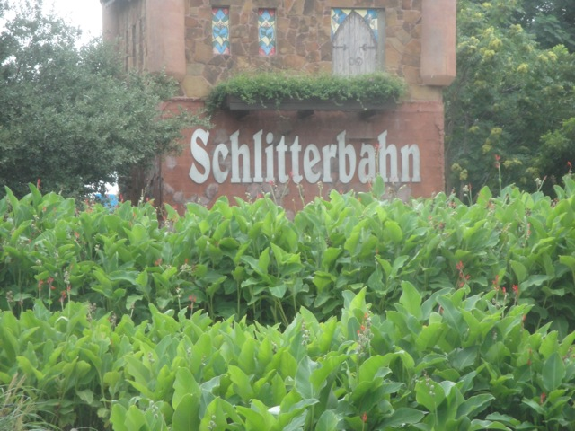
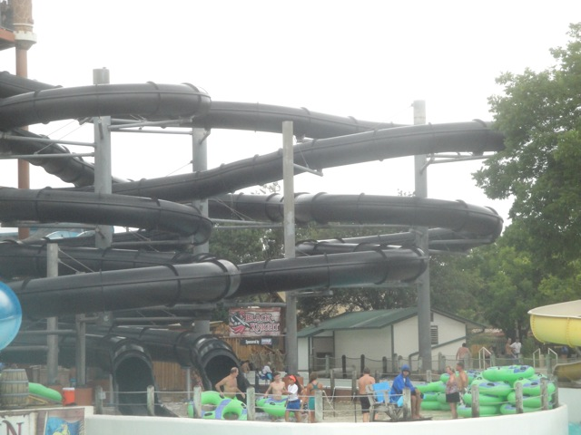
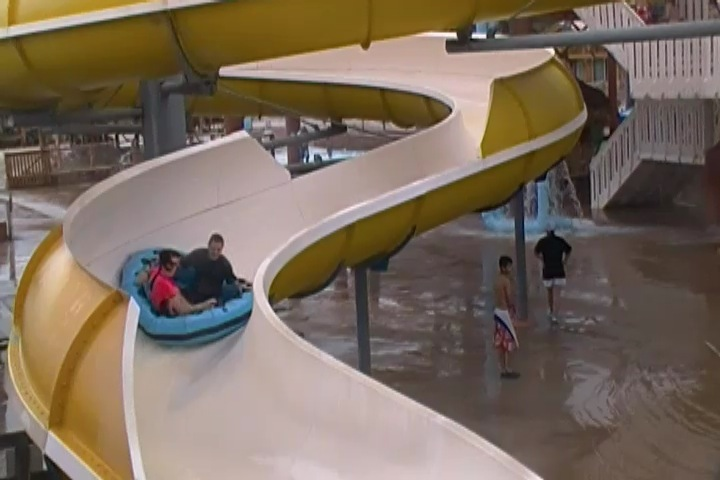

| |
Schlitterbahn Review

Schlitterbahn in New Braunfels is without a doubt, one of the most famous water parks in the country. And while some could argue that that makes it overrated, I honestly wouldn't say so. Yeah, maybe you could make a case that certain aspects of the park that they hype up to death are overrated, and yeah. That'd be true. But as a whole, Schlitterbahn is f*cking awesome!! This really is one of the best water parks in the country!! It's definetly my favorite water park, though that's honestly not saying much considering how there's only three water parks I really like. One of the others is now closed and the other is all the way in Italy. So there's not much competiton for Schlitterbahn (for now). But even with that out of the way, I just love Schlitterbahn. I had a blast at this park. The park is divided into two sections. East (New) Schlitterbahn, and West (Old) Schlitterbahn. While East Schlitterbahn is definetly the more famous part with all the photogenic slides and the famous (but not best) Master Blaster, West Schlitterbahn is definetly the better half and where the heart is. I know it's weird for me to say this as a guy from So-Cal who's only visited once so far, but even I could pick up on that when I was at the park. It has all the famous tube chutes, and just a bunch of cool underrated slides that are just a ton of fun. This is the part that the Travel Channel doesn't really focus on, and it's just a ton of fun. So yeah. Everyone's telling you to visit Schlitterbahn when visiting either San Antonio or Austin. Yeah, take that advice. =)
The Major Waterslides
There is a link to a review of all the Major Waterslides at Schlitterbahn (New Braunfels).
Black Knight Review

Downhill Racer Review

Dragon's Revenge Review

Master Blaster Review

Wolf Pack Review

All the Other Waterslides
Here are the reviews of all the other water slides at Schlitterbahn that I didn't feel deserved a full length review. Now this doesn't mean that the water slides above are all masterpeices and these are the less inferior slides. If you actually read the reviews, you will quickly find out that just because I gave the water slide it's own review doesn't mean that it's necesarrily good. There are such things as bad reviews, and you should know that I'm not afraid to write them. There's a reason I'll rank rides as 3/10s, 2/10s, or even 1/10s (there's a bad review up there. Go read them and see which one it is). And just because I didn't give the water slide it's own review does not mean that it's not good. What makes me give a water slide its own review is mainly size, popularity, uniqueness, and just whether I have a lot to say about the ride. There's plenty of slides at Schlitterbahn that I really liked, but didn't give their own review. First up, the Soda Straws. These are some of those slides where the main gimmick is that it's two slides that just twist on top of each other and look like this insane twisted mess. So people see how twisted it is and just go "HOLY CRAP!!!". I was cynical going on, thinking it was all just a gimmick and that it'd be lame. WRONG!!! You feel all the twists on the ride, and I just loved it. I loved every bit of it. I know there are clones of this out there, and I hope that more pop up. Moving on, we also have the Double Loop. Doesn't look like anything special, but if you really give yourself a push and don't slow yourself down, you'll FLY and go 90 degrees on the turns. The fact that it's made of rubber really makes me miss Wild Rivers (F*CK YOU IRVINE COMP!!!). So there's not only fun laterals, but also nostalgia with this slide. It just feels like a Wild Rivers slide. And finally, we have the Banzahi Pipeline. Meh, it's a fun set of water slides, but not that special. But hey, still a fun water slide and far from the worst at Schlitterbahn (did you read my reviews up above and discover which big name slide I really dislike? If not, you should). That's pretty much all the main slides at Schlitterbahn that I did. They have some kiddy slides as well. But don't worry. There's a lot more at Schlitterbahn to do. Just keep reading the review.
 Don't ignore this slide. It's a lot of fun. =)
Don't ignore this slide. It's a lot of fun. =)
Dining
I'm not really sure what all the dining options are at Schlitterbahn, as I never ate at the park. But honestly, water parks generally aren't great dining hubs. I know that for the most part, amusement parks aren't either. But there are some great dining options at some theme parks. Hell, we have a whole Top 10 Theme Park Dining Options list for those parks that bring out the foodie in all of us. Though with water parks, while there are a couple of cool dining options I've seen, I've never seen real good dining, simply because people all wet don't want to sit down and have a nice meal. Though there are a couple things that are really cool, and one thing that looks awesome. Swim Up Bars. Yep, at Schlitterbahn, the bar is in one of the pools and you can have a cocktail in the pool. I was *this* close to doing that. The only thing that stopped me was simply because of time and I was going to drive away soon. Yeah, I regret not doing that, even though I know that the drink prices are outrageous. Back then, I had the money to blow on overpriced pool cocktails. *Sigh* But either way, it's still there. So definetly make sure to go and have a drink while at Schlitterbahn.
 "Hey everyone! Let's get drunk inside the pool!" =)
"Hey everyone! Let's get drunk inside the pool!" =)
Theming and Other Attractions
Here are the reviews of all the other stuff at Schlitterbahn. Well, as for theming, there's not much. Themed water parks do exist, but they're the exception. I guess there's a little bit of theming with Dragon's Revenge, and there is a treehouse that apparently is so impressive that Cody wanted to drive around looking for it so we could stop there. Well that saved us a lot of time Schlitterbahn. Thanks for having a cool treehouse. But let's talk about other stuff, because I've left out perhaps one of the things that Schlitterbahn is best known for. Their Tube Chutes. All the tube chutes at Schlitterbahn are really freaking awesome. They come in all sorts of different shapes and sizes, and when it comes to the really crazy ones, they are just a TON OF FUN!!! Hell, despite me not even counting it as a water slide, I put the White Water Tube Chute on my Top 10 Water Slides List because I just love it so much (and you'll see more Schlitterbahn on that list). The Tube Chutes are just about the most fun you can have in the park, and I love some of the slides here. Not only do they just do a ton of drops and other cool stuff, but it just turns into a lazy river and then you can relax. Hell, some of these tube chutes can take up to 45 minutes and can even connect with one of the local rivers. Now that is just plain badass. You have to do the Tube Chutes. Regardless of thrill level, there's probably a tube chute for you.
 No seriously! This lazy river is NOT LAZY!!!
No seriously! This lazy river is NOT LAZY!!!
In Conclusion
Schlitterbahn is a great park and is definetly something that I'd recommend. I know when a park is featured all over the Travel Channel and praised to no end, it's easy to get cynical and think that it's going to be overrated and that they're just hyping it up. And considering how often that happens, I can understand the skepticism. But in this case, they're not. Schlitterbahn really is a great water park. OK, it's not perfect. It does have some overrated slides, particuarly ones that constantly get featured on the Travel Channel. But all the stuff about all the Tube Chutes, totally true and amazing. And not only that, but Schlitterbahn has some hidden gems with some really great slides that don't get featured in the spotlight of the Travel Channel. And all in all, it's just a really big, balanced, water park with a wide variety of attractions to choose from. I know that the park can get crowded, but I never had a problem when I visited. And...yeah. It's all just a ton of fun. So if you're nearby and you have any sort of love for water parks at all, definetly stop on by and take a visit to Schlitterbahn. You don't have to be a die-hard water park fan to have a good time.
Tips
*Spend all day at the Water Park.
*Don't spend all the time in East Schlitterbahn. Many of the great slides are in West Schlitterbahn.
*Do the Tube Chute.
*Have Fun!!!
Location
New Braunfels, Texas, U.S.A
Last Day Visited
July 15, 2013
I don't have a Schlitterbahn video as I didn't get enough footage. Considering how getting water park footage is a nightmare, it's probably not gonna happen.
Complete Update List
2013
Texas/Rocky Mtn Road Trip
Here's a link to the parks website.
Home
|